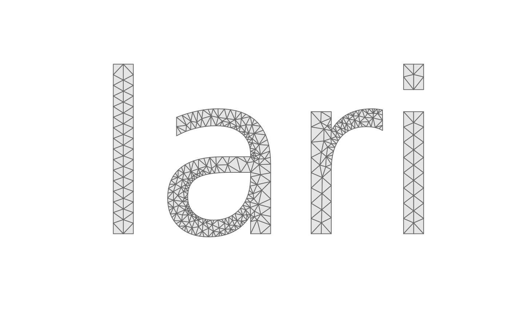

Shape a string, take its glyph outlines and mesh them: the one-call form
of lari_text_outline() followed by lari_glyphs(). Needs the
'textshaping' and 'systemfonts' packages.
Usage
lari_text(
text,
family = "",
weight = "normal",
italic = FALSE,
path = NULL,
em = 1,
tolerance = 0.002,
...
)Arguments
- text
a character string (newlines start new lines)
- family, weight, italic, path
font selection, passed to
textshaping::shape_text()(pathis a font file, which overridesfamily)- em
the size of one em (the font size) in output units
- tolerance
the maximum distance between the flattened outline and the curves of the font, in output units
- ...
passed to
lari_glyphs()and on tolari_triangulate()(max_area,min_angle,sizefor a sizing field,erase,merge)
Value
see lari_glyphs()
Examples
r <- lari_text("lari", max_area = 0.002, min_angle = 25)
table(r$triangles$glyph)
#>
#> 1 2 3 4
#> 62 384 128 42
tri <- r$triangles
idx <- rbind(tri$v0, tri$v1, tri$v2, NA)
plot(r$vertices$x, r$vertices$y, type = "n", asp = 1, axes = FALSE,
xlab = "", ylab = "")
polygon(r$vertices$x[idx], r$vertices$y[idx], col = "grey90", border = "grey40")
